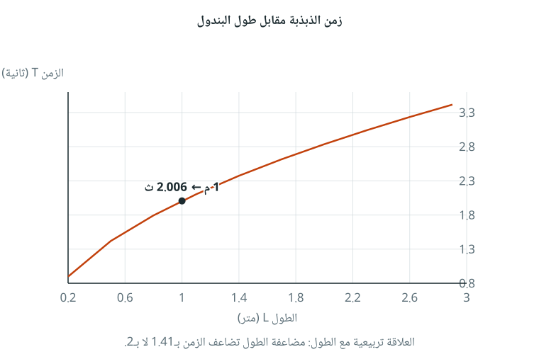

ما الذي يحدد زمن ذبذبة البندول؟
اسحب الطول وشاهد كيف يتغيّر زمن الذبذبة، ثم قارن مترًا واحدًا بمترين.
T = 2π√(L/g)
المقياس يبدأ عند قيمة الطول الافتراضي (1 م)، فإن غيّرت الطول قارن بالفرق الظاهر أسفله.
افتراضات النموذج والمصدر
خيط عديم الكتلة وثقل نقطي
زاوية إزاحة أقل من 15 درجة
لا مقاومة هواء
g = 9.81 م/ث²
البندول كتلة معلّقة بخيط. أزحها عن موضع الاتزان ثم اتركها، فتتأرجح ذهابًا وإيابًا بزمن ثابت لا يتغيّر مع تناقص السعة التدريجي.
المهم أن الزمن يُقاس بالطول لا بالكتلة: ثقل من الحديد وآخر من الخشب بالطول نفسه يتأرجحان بالزمن نفسه. غيّر الطول في اللوحة وتابعه على المقياس، ثم قارن الزمن عند متر واحد بمترين.
الآلية
كيف يحدث الأمر على مستوى الجسيمات أو المتغيّرات المباشرة
القوة المعيدة هي المركّبة المماسية للوزن، ومقدارها mg·sinθ. عند زوايا صغيرة يصبح sinθ≈θ، فتصير القوة متناسبة مع الإزاحة ومعاكسة لها — وهذا تعريف الحركة التوافقية البسيطة. لهذا يخرج الزمن مستقلًّا عن السعة: القوة الأكبر عند إزاحة أكبر تعوّض المسافة الأطول.
الأرقام والوحدات
العلاقات والوحدات والنطاقات العددية التي تسند الشرح
T = 2π√(L/g). عند L=1 م وg=9.81 م/ث² يكون T=2.006 ث؛ وعند L=2 م يصبح 2.837 ث — أي 1.41 من الأول لأن النسبة √2. وعند L=0.25 م ينزل إلى 1.003 ث. الزمن لا يعتمد على كتلة الثقل لأنها تُختصر من طرفي معادلة الحركة.
الفرق الدقيق
المفهوم الملتبس الذي يُخلَط به، وأين ينفصلان
يُخلط بين الزمن T والتردد f: العلاقة مقلوبة f=1/T. ويُظنّ أن زيادة الكتلة تُبطئ البندول — لا تفعل. كما يُظنّ أن السعة تغيّر الزمن: في الحقيقة السعة تؤثر بنسبة (1+θ²/16) فقط، أي أقل من 0.2% تحت 10 درجات.
حدود التعريف
أين ينكسر التعريف أو النموذج وما الذي لا يفسّره
المعادلة صحيحة عند زوايا صغيرة (أقل من 15 درجة يبقى الخطأ تحت 1%). عند السعات الكبيرة يطول الزمن فعليًّا ويحتاج التكامل الإهليلجي. وتفشل عند إضافة مقاومة الهواء القوية أو عند خيط قابل للتمدّد، وعندها يصبح النموذج تقريبًا لا قانونًا.

| الكمية | القيمة | المصدر |
|---|---|---|
| تسارع الجاذبية القياسي | 9.81 م/ث² | [1] |
| زمن الذبذبة عند طول 1 متر | 2.006 ث | [2] |
| زمن الذبذبة عند طول 2 متر | 2.837 ث | [2] |
المصادر
- 1 The Simple Pendulum — College Physics 16.4 — OpenStax. openstax.org/books/college-physics/pages/16-4-the-simple-pendulum · اطُّلع عليه 2026-11-16
- 2 Standard gravity and the SI second — NIST. www.nist.gov/pml/weights-and-measures/si-units-time · اطُّلع عليه 2026-11-16
راجعه: مراجعة آلية — بوابة الديوان (فحص بنيوي وأرقام) 2026-11-16 · 2026-11-16 · آخر تحديث 2026-11-16